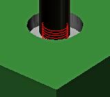

Valeur de 1,8 x diamètre
Valeur de 0,8 x diamètre
Diamètre maximal à utiliser pour une entrée hélicoïdale dans l'empreinte.
Avec une valeur optimale, l'outil recouvre son centre, mais crée néanmoins l'alésage hélicoïdal maximal pour l'entrée dans l'empreinte. L'objectif est d'obtenir une bonne évacuation des copeaux. Si la valeur est supérieure au diamètre de l'outil, un bossage peut apparaître au centre de l'hélice.
|
 |
Valeur de 1,8 x diamètre |
Valeur de 0,8 x diamètre |
Le système détermine le meilleur emplacement pour l'hélice d'entrée, sauf si une position d'entrée est sélectionnée. (Les positions d'entrée sont indiquées ci-dessous.) L'intégralité de la zone sera toujours effacée, quel que soit le diamètre. Remarque: la largeur de la zone doit correspondre à la formule Diamètre de l'outil + Diamètre de la rampe + Brut, sinon l'entrée hélicoïdale échouera.